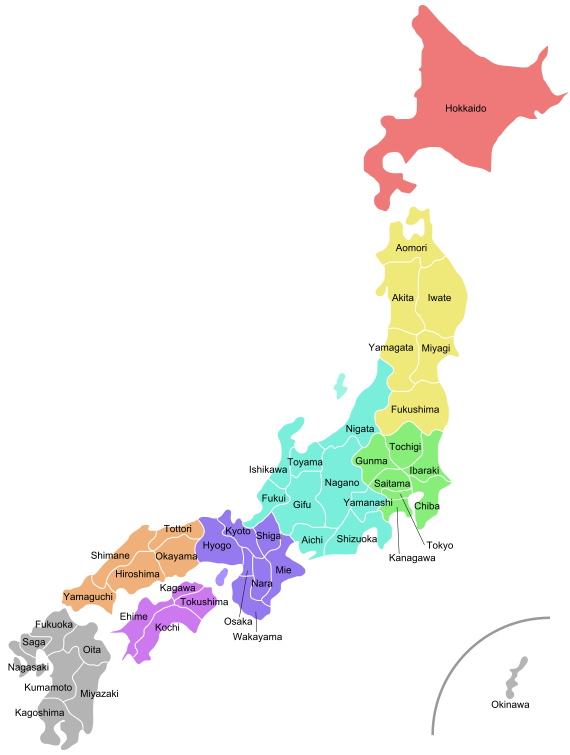

Angola
Brasil
Cuba
Canada
Japão
Uruguai
Mapa do Japão

Província de Aomori
Clima
População
Altitude
Vegetação Predominante
Temperado frio
Cerca de 1,2 milhão de habitantes
Altitude média de aproximadamente 120 a 237 metros
Floresta temperada e boreal
fechar
Província de Fukushima
Clima
População
Altitude
Vegetação Predominante
Temperado continental úmido e subtropical úmido
Aproximadamente 1,74 milhão de habitantes
Aproximadamente 77 a 398 metros
Floresta temperada
fechar
Província de Hokkaido
Clima
População
Altitude
Vegetação Predominante
Subártico úmido
Aproximadamente 5,1 milhões de habitantes
Altitude média é aproximadamente 98 metros
Floresta mista de coníferas
fechar
Província de Iwate
Clima
População
Altitude
Vegetação Predominante
Continental úmido
Aproximadamente 1,2 milhão de habitantes
Altitude média de aproximadamente 267 metros
Floresta temperada e subalpina
fechar
LOGOUT